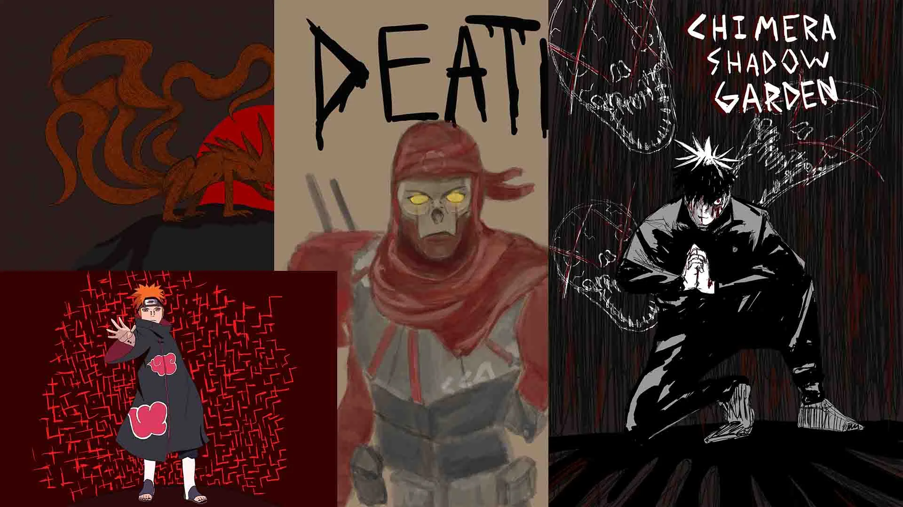
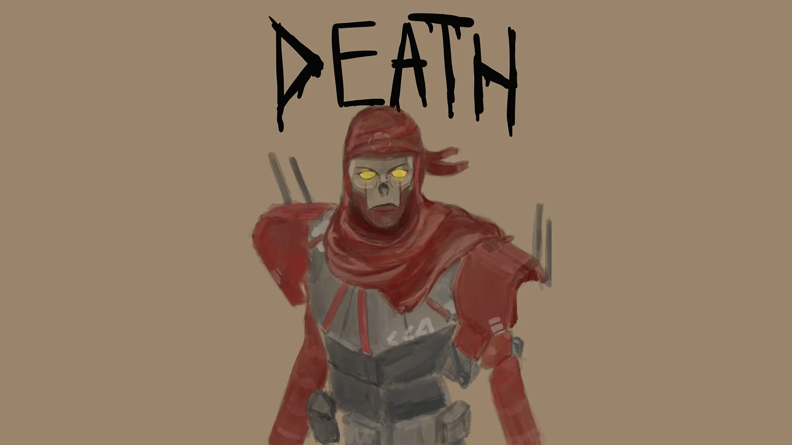
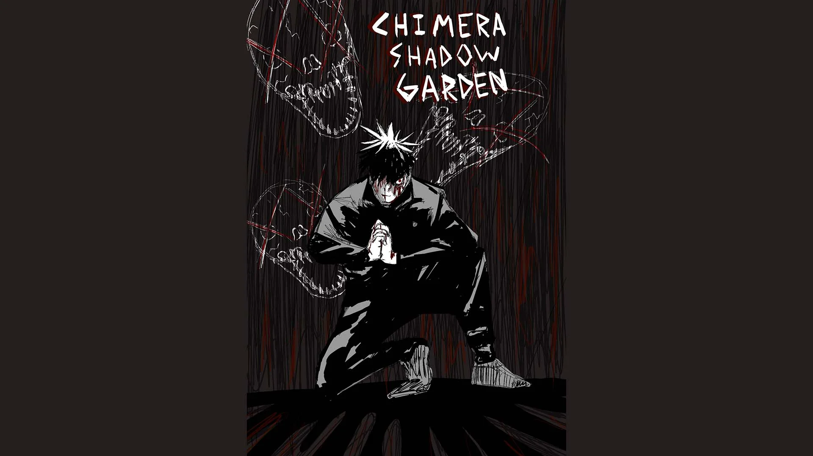
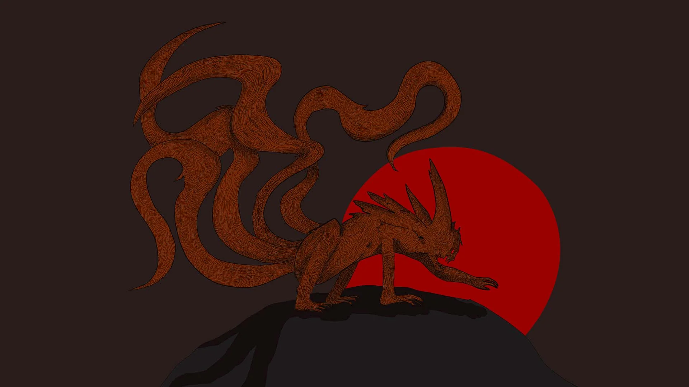
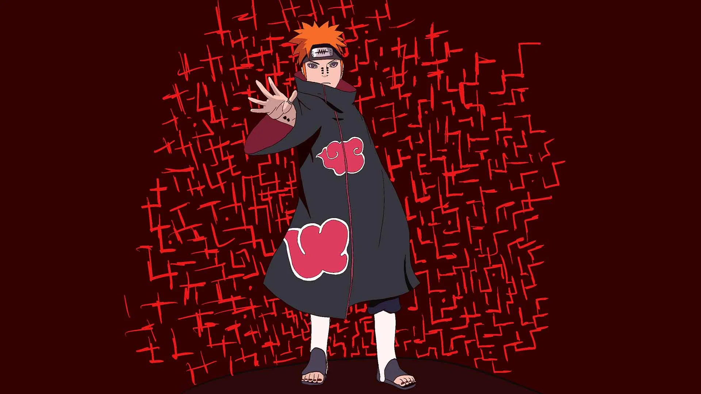

A lot of my art is inspired by works from other media and artists. These artworks were created on Procreate using the iPad Pro to add my own twist on these popular characters.

Fanart of the character “Revenant” from the game: Apex Legends

Fanart of the character “Megumi Fushiguro” from the anime: “Jujutsu Kaisen”

Fanart of the character “Naruto” from the anime: Naruto Shippuden”

Fanart of the character “Pain” from the anime: Naruto Shippuden”